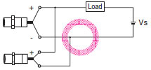
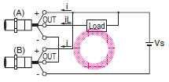

Building Automation
Industrial Automation
Power Automation & Safety


Bangladesh Distributor
Question
What series and parallel connections are possible with Proximity Sensors?
Answer
| Model | Type of connection | Connection | Description |
| DC 2-Wire | AND (series connection) | Keep the number of connected Sensors (N) within the range of the following equation. VS - N x VR ≥ Operating load voltage N : Number of Sensors that can be connected VR: Residual output voltage of Proximity Sensor VS: Power voltage It is possible, however, that the indicators may not light correctly and error pulses (of approximately 1 ms) may be generated because the rated power supply voltage and current are not supplied to individual Proximity Sensors. Verify that this is not a problem before operation. | |
| OR (parallel connection) |  | Keep the number of connected Sensors (N) within the range of the following equation. N x i ≤ Load reset current N: Number of Sensors that can be connected i: Leakage current of Proximity Sensor Example: When an MY (24-VDC) Relay is used as the load, the maximum number of Sensors that can be connected is 4. | |
| AC 2-wire | AND (series connection) | TL-NY, TL-MY, E2K-[]MY[], TL-T[]Y The above Proximity Sensors cannot be used in a sereis connection. If needed, connect through relays. E2E-X[]Y For the above Proximity Sensors, the voltage VL that can be applied to the load when ON is VL = VS - (Output residual voltage x Number of Sensors), for both 100 VAC and 200 VAC. The load will not operate unless VL is higher than the load operating voltage. This must be verified before use. When using two or more Sensors in series with an AND circuit, the limit is three Sensors. (Be careful of the VS value in the diagram at left.) | |
| OR (parallel connection) | In general it is not possible to use two or more Proximity Sensors in parallel with an OR circuit. A parallel connection can be used if A and B will not be operated simultaneously and there is no need to hold the load. The leakage current, however, will be n times the value for each Sensor and reset failures will frequently occur. ("n" is the number of Proximity Sensors.) If A and B will be operated simultaneously and the load is held, a parallel connection is not possible. If A and B operate simultaneously and the load is held, the voltages of both A and B will fall to about 10 V when A turns ON, and the load current will flow through A causing random operation. When the sensing object approaches B, the voltage of both terminals of B is too low at 10 V and the switching element of B will not operate. When A turns OFF again, the voltages of both A and B rise to the power supply voltage and B is finally able to turn ON. During this period, there are times when A and B both turn OFF (approximately 10 ms) and the loads are momentarily restored. In cases where the load is to be held in this way, use a relay as shown in the diagram at left. | ||
| DC 3-wire | AND (series connection) |  | Keep the number of connected Sensors (N) within the range of the following equation. iL + (N - 1) x i ≤ Upper limit of Proximity Sensor control output VS - N x VR ≥ Operating load voltage N : Number of Sensors that can be connected VR: Residual output voltage of Sensor VS: Power supply voltage i : Current consumption of Sensor iL: Load current Example: A maximum of two Sensors can be used when an MY (24-VDC) Relay is used for the load. Note: When an AND circuit is connected, the operation of Proximity Sensor B causes power to be supplied to Proximity Sensor A, and thus erroneous pulses (approximately 1 ms) may be generated in A when the power is turned ON. For this reason, take care when the load has a high response speed because malfunction may result. |
| OR (parallel connection) | For Sensors with a current output, a minimum of three OR connections is possible. Whether or not four or more connections is possible depends on the model. |
Note:When AND/OR connections are used with Proximity Sensors, the effects of erroneous pulses or leakage current may prevent use. Verify that there are no problems before use.
Recommended Products


Other Proximity Sensors FAQ
-
 What kind of consideration points does it have when the relay is connected to Proximity Sensors?
What kind of consideration points does it have when the relay is connected to Proximity Sensors?
-
What is the allowable bending radius of coaxial cables or shielded cables for Photoelectric Sensors and Proximity Sensors?
-
How many 2-wire DC Proximity Sensors can be connected to the input side of B7AP Power Couplers?